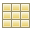
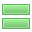
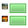

Titles and Summaries
The Titles and Summaries object is an index that can be used with any collection. (Remember your home page is a collection too). It's the sort of index created automatically when making a new page with the blog template.
To add the Titles and Summaries Index, go to the "Objects" menu in the toolbar, choose "Indexes", then "Titles and Summaries"
You can customize the look of the object by clicking on the newly created object on the page and opening the Object Inspector (now titled "Titles and Summaries")
Collection to index
Here you can drag the target to the main collection of your blog if it is not already done for you
Show at most
This is to set the number posts that will be seen on the main page of your collection. Useful for larger collections such as blogs where there may eventually be dozens of pages. If you are not showing all of your entries in your collection, you may want to set up a collection archive to access older entries.
Layout
There are many different 'views' to choose from, also you can check the options that you would like for your posts.
 - Shows the pages of your collection as a bulleted title list
- Shows the pages of your collection as a bulleted title list
- Shows your collection as a list of titles, without bullets
 - Shows your collection as a table
 - Shows your articles
 - Shows your articles with thumbnail images
- Date Created / Date Modified
- This will display the date created or modified. Choose between created or modified in the popup menu to the right.
- Permanent Links
- Makes the date that is displayed a link. If the date is not displayed (using the above checkbox), then the link text will say "Permanent link".
- Comments
- Allow your visitors to add Comments to your posts.
Article Length
Slide the slider to the left or right to shorten or lengthen the length of the article that shows on the main page of your collection. If the slider is all the way to the right, there will be no truncation at all.
Hyperlink titles
Check this box if you would like the title of your pages to be links to the pages.